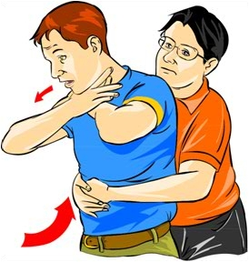

<div id="choking-immediate">
<h2 class="innerheader">Choking</h2>
				<br>

    <div class="row">

		<div class="col-xs-4">
			<h3>Choking symptoms:</h3>
			<ul>
				<li>Unable to talk.</li>
				<li>Unable to breath.</li>
				<li>Noisy breathing.</li>
				<li>Skin, lips and nails are dusky or blue.</li>
				<li>Unable to cough forcefully.</li>
			</ul>

			<h3>When To Call 911</h3>
			<ul>
				<li>The person is unconscious.</li>
				<li>You are unable to stop the choking.</li>
			</ul>


		</div>

        <div class="col-xs-4">
            <h3>What To Do</h3>
            <ol>
				<li>Try blows to the back with the heal of your hand (right below your palm). </li>
				<li>Try thrusts (the Heimlich maneuver). If the person is obese or pregnant you can try this closer to the breast plate.
					<ol>
					<li>Stand behind the person and wrap your arms around their waist.</li>
					<li>Place your clenched fists right above the person’s navel. </li>
					<li>Grab your fists and pull inward and upward.</li>
					<li>You can try cycling between 5 blows and 5 thrusts.</li>
					<li>If the object is in their mouth and you can see it, you can try to take it out.</li>
					</ol>
				</li>
				<li>Stopping unconscious choking:
					<ol>
					<li>Lower the person on the ground.</li>
					<li>Clear the airway.</li>
					<li>Start CPR.</li>
					</ol>
				</li>
				<li>Clear choking of a baby younger than age 1:
					<ol>
					<li>Sit down and hold the baby facedown.</li>
					<li>Pat firmly but gently the middle of their back with the heel of your hand.</li>
					<li>Hold the infant faceup with your forearm if the above did not work. Give quick chest compressions with two fingers at the person’s breastbone.</li>
					<li>Repeat or try infant cpr.</li>
					</ol>
				</li>
			</ol>

        </div>

		<div class="col-xs-4">
            <h3>What Not To Do</h3>
            <ul>
				<li>Clear choking on an infant in the same way as an adult. </li>
				<li>Give thrusts to pregnant women.</li>
				<li>Give thrusts without having the person examined afterwards by a doctor. </li>
				<li>Do nothing. Choking cannot be underestimated.</li>
			</ul>
			<div class="col-xs-1">
                <input type="image" src="../media/images/MD_Button.png"  class="dr_button" onclick="toggle_visibility('hidden')">
            <div class="col-xs-6" id="hidden" style="display:none;">
            <div class="dr_rock">
                <p class="speech">Dr Rock Says: Remember to Call 911 if this is an emergency!
                </p>
            </div>
            </div>
            </div>
        </div>

    </div>
</div>